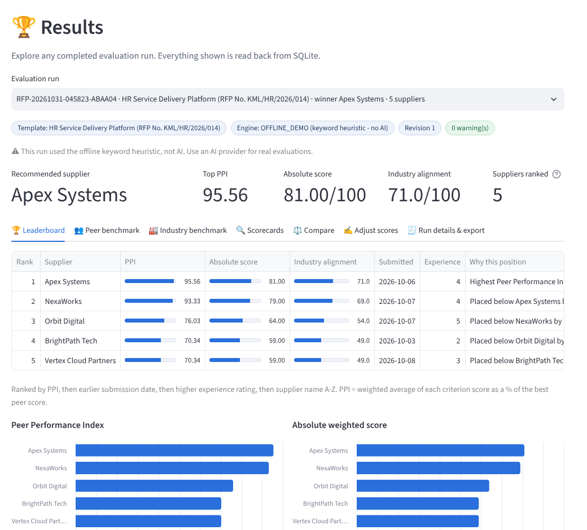

Agentic RFP Evaluation and Supplier Ranking · How I approached and built the mini project
Sample data: an HR service delivery platform RFP with 5 supplier proposals, and a corporate fleet lease RFQ with 3 quotes, all fictional and created for this project.
| Phase | What I did | Why |
|---|---|---|
| 1 · Understand | Read the brief and the class discussion. Listed every requirement against the 100-mark rubric, plus the instructor's suggestions: template-first criteria, an editable prompt, peer and industry scoring, run history, DNA reuse, Q&A, the API key entered in the UI, and a modular code layout. | To be clear on what "done" means before building. |
| 2 · Design | Fixed the principle "AI reads, code decides". Split the work into single-purpose agents and tools. Designed the SQLite tables so nothing lives only in memory. | Auditability and repeatability matter most in procurement. |
| 3 · Build the core | End-to-end flow first: PDF → AI scorecard → validation → scoring → ranking → database → leaderboard. Tested without AI using an offline evaluator. | As advised in class: solve the main use case first, then add richness. |
| 4 · Add richness | Template Agent, prompt versioning, industry benchmark, evaluation DNA, RAG Q&A, comparison, analyst overrides, PDF report, history. | Make it useful for a real procurement analyst. |
| 5 · Test | 37 automated tests, plus browser walkthroughs of every page, including the bad-input, malformed-AI-output and tie-break cases. | Prove the calculations and guardrails work. |
| 6 · Ship | GitHub repository, Streamlit Community Cloud deployment, README, this document and a demo video. | Submission requirements. |
| Tool | What I used it for | Why this choice |
|---|---|---|
| Claude (Anthropic) as AI coding agent | Wrote the code to my specifications, generated the synthetic RFP and proposal PDFs, and wrote the tests and documentation. I reviewed, tested and directed each iteration. | The instructor encouraged using a coding agent "to full extent"; it let me focus on design, requirements and testing. |
| Python 3.12 | The whole application, in modular files (one per agent or tool). | Course language; the class asked for modules, not a notebook. |
| Streamlit | Multi-page web UI (st.navigation), data editors, charts, downloads. | Required by the brief; fast to build interactive data apps. |
| LangGraph | The Orchestrator: a state machine with nodes, edges and a conditional "no readable PDF" route. | Taught in Modules 3-4; makes the agent flow explicit and traceable. |
| SQLite | Templates, criteria, prompt versions, runs, results, proposal text, DNA, overrides. | Required; zero setup; the same schema could move to Postgres. |
LLM: Cohere command-a-03-2025 (default) | Template drafting, supplier scoring and Q&A answers, through the OpenAI-compatible API. OpenRouter, OpenAI and Groq are switchable from a dropdown. | Free trial key, strong instruction following and JSON output; provider-agnostic, so there is no lock-in. |
| PyMuPDF / pypdf | PDF text extraction, with a fallback; header and footer removal. | Reliable on text PDFs; the fallback adds robustness. |
| Pydantic | Schema validation of every AI reply. | Treats the LLM as an untrusted component. |
| Altair, ReportLab | Charts (leaderboard, heatmaps, comparison) and the one-click PDF report. | Clear visuals; a shareable output for managers. |
| pytest | 37 automated tests, including a fake LLM API for the AI paths. | Repeatable proof that the formulas and guardrails work. |
| VS Code, GitHub Desktop, Streamlit Community Cloud | Running locally, publishing the code and hosting the public app. | Free, beginner-friendly, required for submission. |
orange = the AI is involved · blue = deterministic code or database

Results page: leaderboard with PPI, absolute score, industry alignment and a written reason for every position.
| AI component | What it does | Guardrails |
|---|---|---|
| Template Agent | Reads the client RFP and returns the title, buyer, industry, summary, key requirements, and 4-7 criteria with weights, a description and an industry best-practice benchmark. | Uses the RFP's own weights if stated; weights normalised to exactly 100; the analyst reviews before saving; a rules-based parser is the fallback. |
| Evaluation Agent | Scores one supplier at a time on every criterion: score, industry score, justification, verbatim evidence quote, strengths, weaknesses, risks, summary. | "Use only the document"; JSON mode; temperature 0; a scoring guide; one repair retry; Pydantic validation; quotes checked against the PDF; the AI never sees other suppliers or does the maths. |
| Q&A (RAG) | Answers analyst questions across proposals: chunk the text (with page numbers), retrieve with BM25 per supplier, answer with citations [n]. | Answers only from the retrieved excerpts, and says "the proposals do not say" otherwise; sources are shown under every answer. |
| Metric | Formula |
|---|---|
| Absolute weighted score | Σ (criterion score ÷ max score) × weight → 0-100 |
| Criterion benchmark | Highest validated score for the criterion among the suppliers in the run |
| Gap / Relative % | Score − benchmark · Score ÷ benchmark × 100 (0 for everyone if the benchmark is 0, with a warning) |
| Peer Performance Index (ranking) | Σ (relative % × weight) ÷ Σ weights |
| Industry Alignment Index | Σ (industry score ÷ max) × weight. Shown alongside, not used to rank. |
| Tie-break order | 1) higher PPI → 2) earlier submission date → 3) higher experience rating → 4) supplier name A-Z; ranks assigned after one stable sort |
Worked example (unit-tested): Technical 60% and Commercial 40%. A scores 8 and 5; B scores 4 and 10. Absolute: A = 68, B = 64. Benchmarks are 8 and 10, so A's relative scores are 100% and 50%, giving PPI 80; B's are 50% and 100%, giving PPI 70. A ranks first.
| Feature | Value to a procurement analyst |
|---|---|
| Template-first criteria from any RFP | Works for software, vehicles, medicines and more; shown with two different domains. |
| Editable, versioned AI prompt and preview | Analysts can tune the evaluator without code, and every run records the version used. |
| Peer and industry benchmarking | "Best among bidders" and "good by market standards" are different questions; both are answered. |
| Evidence verification | Catches invented quotes (hallucinations) before anyone relies on them. |
| Analyst overrides with reasons | Keeps the human in control, with a full audit log and instant re-ranking. |
| Ask the proposals (RAG) | Answers questions like "who holds SOC 2?" in seconds, with citations. |
| Compare two suppliers | Side-by-side scores and evidence for shortlisting discussions. |
| Evaluation DNA, history, PDF report | Reproducible results, lower cost, past runs reopenable, a shareable report. |
| Testing tools and offline mode | Show validation and tie-breaks on demand; try the app without a key. |
| Rubric area (marks) | Where it is addressed |
|---|---|
| Agentic workflow & tool use (20) | LangGraph Orchestrator with 8 nodes and a conditional route; 8 single-purpose agents and tools; execution trace in the UI and export. |
| PDF extraction & prompting (15) | PyMuPDF with pypdf fallback and header cleaning; a prompt built from DB criteria and template context; evidence-grounded JSON; editable prompt. |
| Validation & scoring (20) | Pydantic schema, normalisation rules, evidence verification, weighted calculations, unit-tested formulas. |
| Peer ranking & tie-breaks (20) | Benchmarks, gaps, PPI, deterministic 4-rule sort, a written explanation for every position, tie-break demo. |
| SQLite & persistence (10) | 9 tables; criteria and complete run results stored under one RFP_RUN_ID; history and re-scoring. |
| Streamlit UI (10) | 7 pages; guided home checklist; leaderboard, drill-down scorecards, comparison, Q&A; JSON, CSV and PDF downloads. |
| Documentation & testing (5) | README, this document, 37 tests, synthetic data generator, one-click Windows launcher. |
| Course topic | Where it shows up in this project |
|---|---|
| NLP preprocessing (Module 1) | Cleaning extracted PDF text, tokenisation and stemming for retrieval. |
| LLMs and prompt engineering (Modules 2-3) | Role, rules and format prompts; JSON output; temperature 0; repair prompts; prompt versioning. |
| RAG (Modules 2-3) | Chunking with metadata, BM25 retrieval, answers grounded in cited excerpts. |
| Agents and LangGraph (Modules 3-4) | A state-machine orchestrator, tools with single responsibilities, conditional routing. |
| Evaluation and LLMOps (Modules 3-4) | Treating AI output as untrusted, validation layers, automated tests, reproducibility through fingerprints. |
| Systems thinking (Module 4) | Separating judgement (AI) from decision rules (code); a human-in-the-loop override with audit. |
All companies, people, prices and references in the sample documents are fictional and were created for this classroom project.